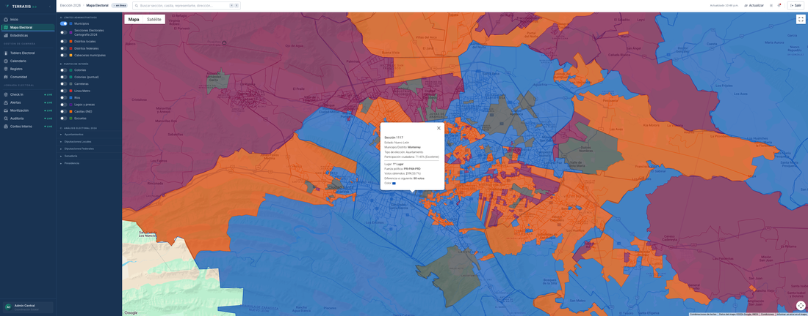
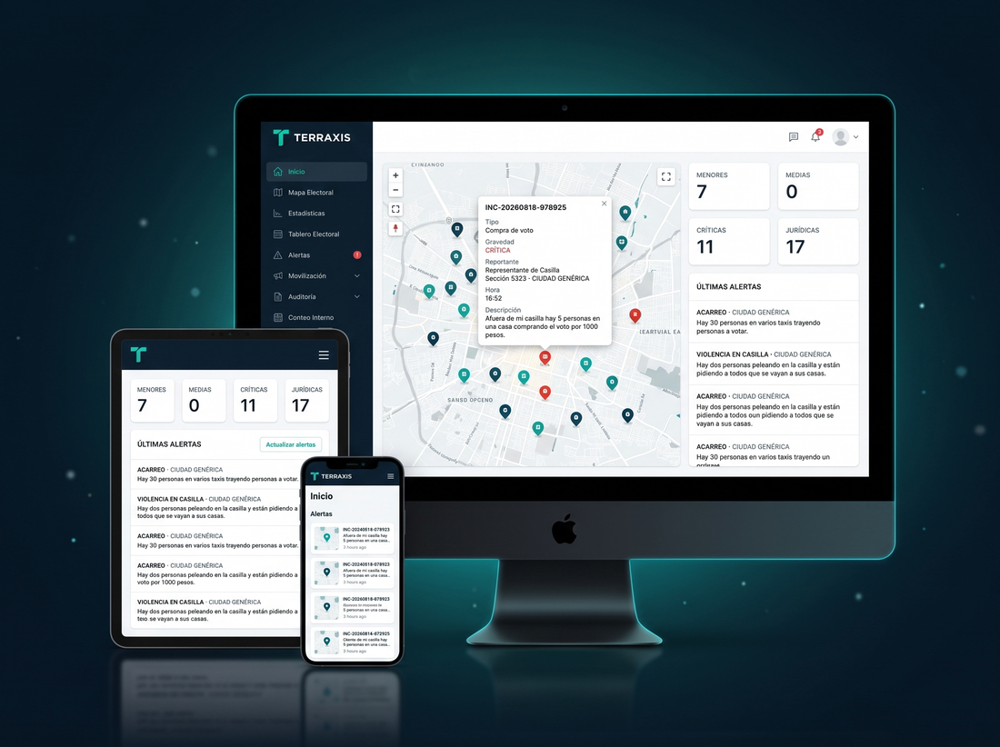
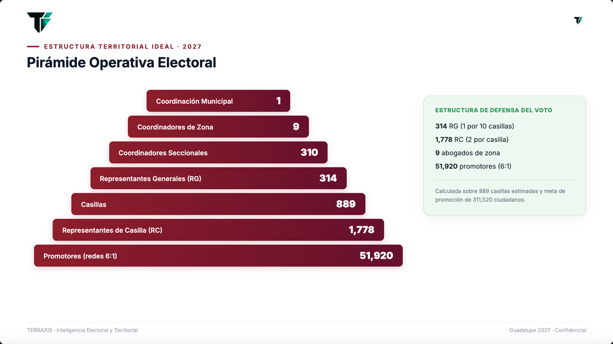

Gobernar con evidencia territorial.
IA y automatización para la administración pública: atención ciudadana rastreable, una sola fuente de verdad del territorio y digitalización que libera la información atrapada en el papel —siempre bajo control institucional del cliente. Del dato público a la decisión de gobierno.

IA y Atención Ciudadana
Convertimos cada solicitud ciudadana en una acción rastreable y cada trámite en una experiencia ágil. La IA libera tiempo a tus funcionarios y eleva la calidad del servicio público, sin perder el control institucional sobre tus datos.
Atención ciudadana con IA · 311 inteligente
Recibe, clasifica, geolocaliza y rutea reportes ciudadanos con seguimiento de ticket de punta a punta.
Trámites Cero
Digitaliza y automatiza trámites con extracción documental asistida por IA: elimina filas y tiempos muertos.
Copiloto del funcionario
IA que redacta informes, oficios y tarjetas sobre los datos públicos del cliente, lista para revisión humana.
311 inteligente
Recibe reportes por múltiples canales y, con IA, los clasifica, geolocaliza y canaliza al área responsable, generando un ticket con seguimiento completo hasta su resolución. Sustituye el desorden por un flujo medible y auditable: respuesta más rápida, asignación correcta al primer intento e indicadores de desempeño por área.

Inteligencia Territorial de Gobierno
Transformamos los datos públicos y nuestros productos derivados en inteligencia accionable sobre tu territorio. De la analítica predictiva al gemelo digital de tu municipio: una visión integral para planear, priorizar y gobernar con precisión.
IA para gobierno
Analítica predictiva y modelos de apoyo a la decisión para anticipar necesidades y escenarios.
Gemelo Digital Municipal
Réplica digital del municipio con capas de población, movilidad, seguridad, obras y servicios.
Centro de Inteligencia Municipal
Operado integralmente por TERRAXIS: plataforma, dashboards, GIS y analistas dedicados.
Observatorio territorial permanente
Entrega mensual de indicadores, mapas y alertas sobre la evolución del territorio.
Inteligencia para inversión pública
Dónde construir, impacto esperado, beneficiarios y análisis costo-beneficio.
Seguridad predictiva territorial
Analítica sobre datos públicos para anticipar y focalizar la estrategia de seguridad.
Focalización social
Programas dirigidos por colonia o AGEB a partir de datos públicos.
Obra pública con IA
Priorización de obra y seguimiento físico-financiero en un solo tablero.
Recaudación con IA
Analítica aplicada al predial y derechos para fortalecer los ingresos propios.
Catastro inteligente
Actualización catastral asistida por IA sobre imágenes satelitales.
Transparencia 360
Tablero público de datos abiertos para fortalecer la rendición de cuentas.
Observatorio del Plan de Desarrollo
Semáforo de metas para dar seguimiento al cumplimiento del plan.
Alerta temprana
Protección civil y gestión de riesgos con detección anticipada.
Movilidad
Analítica de transporte y vialidad para mejorar el desplazamiento urbano.
Gemelo Digital Municipal
Una réplica digital de tu municipio que integra, sobre una misma base, las capas de población, movilidad, seguridad, obras y servicios: el centro de mando territorial donde la realidad del municipio se vuelve visible, comparable y proyectable. Unifica la información dispersa en una sola fuente de verdad y permite simular el efecto de una obra o un programa antes de ejecutarlo.

Plataformas y Digitalización
Construimos la base tecnológica sobre la que opera un gobierno moderno. Con plataformas listas para usar o software a la medida, llevamos a tus dependencias del archivo físico al dato estructurado, gobernado y accionable.
Plataformas gubernamentales
Soluciones SaaS o software a la medida, diseñadas para los procesos y la operación de gobierno.
Digitalización gubernamental con IA
Del papel a lo electrónico, con clasificación y automatización documental asistida por IA. Libera la información atrapada en el papel.
TERRAXIS GeoBase
La capa de inteligencia territorial que alimenta todas las soluciones de gobierno. Ingiere fuentes públicas (INEGI, INE, datos.gob.mx, Sentinel, Landsat), genera capas derivadas propias y acumula patrones del territorio. El valor no está en el dato en bruto —disponible para todos— sino en la analítica, los modelos y la operación que construimos sobre él.